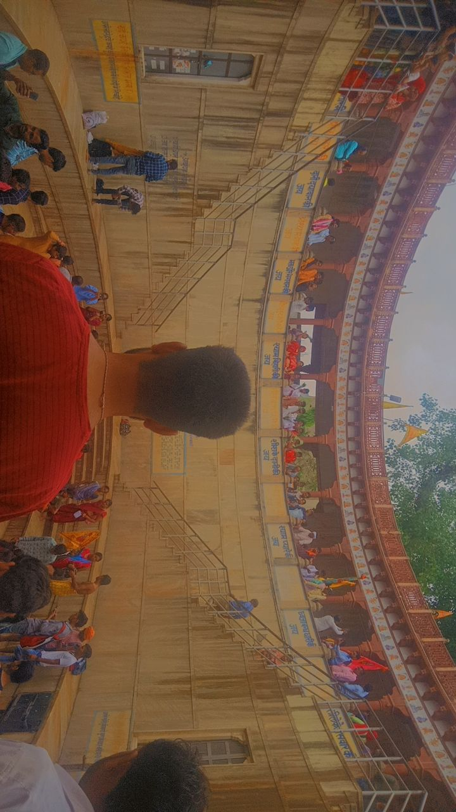

Embracing Hindu Spirituality
As someone deeply connected to my Hindu roots, my journey with spirituality has been profound and enriching. Growing up in a household filled with rituals, prayers, and stories from Hindu mythology, I found myself drawn to the ancient wisdom and traditions that have been passed down through generations. From participating in vibrant festivals like Diwali and Holi to engaging in daily practices such as meditation and chanting, my bond with Hinduism goes beyond mere observance – it's a way of life. Exploring the scriptures and teachings of Hinduism has provided me with a sense of purpose and guidance in navigating life's challenges. The concept of dharma, or duty, resonates deeply with me, reminding me to uphold righteousness and act with compassion in all my endeavors. Moreover, the belief in karma reinforces the idea that our actions shape our destiny, encouraging me to strive for excellence and lead a life of integrity. Beyond its philosophical aspects, Hinduism encompasses a rich tapestry of art, music, and architecture that captivates my senses and nourishes my soul. Whether marveling at the intricate carvings of ancient temples or losing myself in the melodious strains of bhajans, each experience deepens my connection to the divine and fills me with a profound sense of reverence. In today's fast-paced world, where the pressures of modernity often overshadow spiritual pursuits, my bond with Hinduism serves as an anchor, grounding me in a sense of identity and belonging. It reminds me to pause, reflect, and reconnect with the eternal truths that lie at the heart of existence. In essence, my journey with Hinduism is not just a religious affiliation but a profound spiritual odyssey, guiding me towards self-discovery, inner peace, and a deeper understanding of the interconnectedness of all beings.